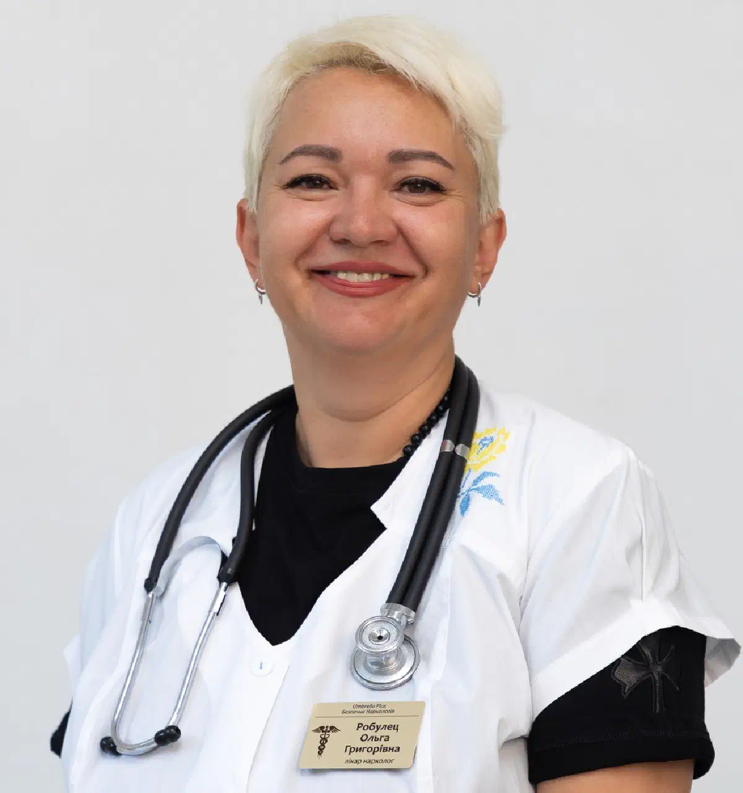

+38(068) 79 72 782
+38(068) 79 72 782Виклик приватного нарколога додому
Анонімна допомога лікаря 24/7


Безкоштовна консультація, працюємо цілодобово 24/7
Анонімна допомога лікаря 24/7

Дата написання: 3 лист. 2026 р.
Останнє оновлення: 3 лист. 2026 р.
Виклик приватного нарколога додому — можливість отримати професійну медичну допомогу при алкогольній або наркотичній інтоксикації, тривалому запої та абстинентному синдромі. Лікар приїжджає за вказаною адресою, оцінює стан пацієнта, проводить необхідні обстеження та визначає безпечну тактику лікування. За наявності показань медична допомога може включати інфузійну терапію, медикаментозне полегшення симптомів і подальше спостереження. Приватна наркологічна допомога вдома доступна цілодобово, включаючи нічний час, вихідні та святкові дні. Звернення здійснюється конфіденційно, з дотриманням лікарської таємниці та без автоматичної постановки пацієнта на наркологічний облік.
Терміновий виклик нарколога додому рекомендується при тривалому вживанні алкоголю, погіршенні самопочуття після запою, появі ознак абстинентного синдрому або підозрі на наркотичну інтоксикацію без симптомів, що загрожують життю. Своєчасна консультація лікаря допомагає визначити тяжкість стану та запобігти розвитку ускладнень. Приводом для звернення можуть стати виражена слабкість, тремор рук, нудота, підвищена пітливість, прискорене серцебиття, тривожність, безсоння та підвищення артеріального тиску. Подібні симптоми нерідко виникають після тривалого вживання спиртного або при його різкому припиненні. Особливо важливо звернутися по медичну допомогу, якщо людина не може самостійно припинити вживання алкоголю, відчуває виражений дискомфорт без чергової дози або раніше стикалася з тяжкою абстиненцією. Лікар визначає, чи допустиме лікування вдома, чи потрібна госпіталізація.
Приватний лікар-нарколог надає комплексну медичну допомогу пацієнтам з алкогольною та наркотичною залежністю. Обсяг послуг визначається після огляду, оцінки скарг, загального стану та можливих протипоказань. Під час домашнього візиту спеціаліст може провести консультацію нарколога, виміряти артеріальний тиск, оцінити серцеву діяльність, виконати ЕКГ та інші необхідні обстеження. За наявності показань призначається медикаментозне лікування, проводиться інфузійна терапія та надаються рекомендації щодо подальшого відновлення. До основних напрямів допомоги належать виведення із запою вдома, лікування неускладненого алкогольного абстинентного синдрому, допомога при окремих станах після вживання наркотичних речовин, оцінка ознак залежності та мотиваційна консультація.
Анонімність і конфіденційність є важливими перевагами звернення по приватну наркологічну допомогу. Пацієнти часто побоюються розголосу проблеми, тому віддають перевагу отриманню консультації та медичних послуг у звичній домашній обстановці. Анонімний виклик нарколога додому передбачає дотримання лікарської таємниці, захист персональних даних і конфіденційне спілкування з пацієнтом. Звернення до приватної служби саме по собі не означає автоматичної постановки на наркологічний облік. Під час візиту лікар проводить огляд, пояснює особливості лікування та узгоджує необхідні процедури. Медична допомога надається з дотриманням вимог законодавства, включаючи правила інформованої згоди. Конфіденційний формат звернення особливо важливий для людей, які вперше зіткнулися із залежністю або хочуть отримати професійну допомогу без зайвої уваги з боку оточення.
У середньому приїзд приватного нарколога додому по місту займає 20–40 хвилин з моменту оформлення виклику. Точний час залежить від місцезнаходження пацієнта, дорожньої ситуації та завантаженості виїзної служби. Під час оформлення заявки оператор уточнює адресу та повідомляє орієнтовний час прибуття. Екстрений виклик нарколога передбачає оперативний виїзд лікаря при тривалому запої, вираженому абстинентному синдромі або погіршенні самопочуття після вживання алкоголю та наркотиків. При зверненні рекомендується повідомити вік пацієнта, основні симптоми, тривалість вживання спиртного або наркотичних речовин і наявність хронічних захворювань. Якщо стан супроводжується втратою свідомості, судомами, порушенням дихання або іншими небезпечними симптомами, необхідно негайно викликати швидку допомогу за номером 103 або 112, не очікуючи приїзду приватного лікаря.
Тривалий запій супроводжується регулярним вживанням алкоголю та може призводити до зневоднення, порушень обміну речовин, серцево-судинних ускладнень і формування вираженого абстинентного синдрому. Виклик нарколога додому при запої дозволяє провести медичний огляд, оцінити тяжкість стану та визначити можливість лікування поза стаціонаром. Лікар уточнює тривалість вживання спиртного, кількість алкоголю, наявність хронічних захворювань і попередніх епізодів тяжкої абстиненції. За відсутності протипоказань може проводитися виведення із запою вдома, що включає медикаментозну допомогу, корекцію виявлених порушень і подальше спостереження. Склад лікування підбирається індивідуально, а інфузійна терапія застосовується лише за наявності показань.
Алкогольна інтоксикація виникає внаслідок токсичного впливу етилового спирту на організм. Її прояви залежать від кількості випитого, індивідуальної переносимості алкоголю, стану здоров’я та поєднання спиртного з іншими речовинами. При легких та окремих неускладнених станах лікар може провести огляд удома, оцінити артеріальний тиск, пульс, дихання, рівень свідомості та ознаки зневоднення. Після обстеження визначається необхідність медикаментозної допомоги. Допомога при алкогольній інтоксикації вдома може включати симптоматичне лікування, корекцію водно-електролітних порушень за наявності показань і рекомендації щодо відновлення. Важливо враховувати, що тяжке алкогольне отруєння потребує госпіталізації. Втрата свідомості, пригнічення дихання, судоми та неможливість розбудити людину є приводом для негайного виклику екстреної медичної допомоги.
Крапельниця від алкоголю вдома застосовується для корекції зневоднення, електролітних порушень та інших наслідків тривалого вживання спиртного. Склад інфузійної терапії підбирається індивідуально після огляду пацієнта, оцінки його стану та можливих протипоказань. До складу крапельниці від алкоголю можуть входити:
Перед процедурою лікар вимірює артеріальний тиск, оцінює пульс, дихання, рівень свідомості та проводить ЕКГ. Необхідність інфузії, поєднання препаратів і тривалість лікування визначаються індивідуально. Реосорбілакт не є обов’язковим компонентом лікування алкогольної інтоксикації, а крапельниця від алкоголю не замінює комплексної терапії алкогольної залежності.
Наркотична інтоксикація може супроводжуватися зміною свідомості, порушеннями серцевого ритму, вираженою тривогою, нудотою, слабкістю та іншими симптомами. Характер проявів залежить від ужитої речовини, її кількості та можливого поєднання з алкоголем або ліками. Виклик лікаря-нарколога додому при наркотичній інтоксикації можливий для оцінки стану пацієнта, який не має ознак тяжкого отруєння. Спеціаліст уточнює обставини вживання, проводить обстеження та визначає подальшу тактику допомоги. За наявності медичних показань проводиться симптоматична терапія та корекція виявлених порушень. Однак не кожну наркотичну інтоксикацію можна безпечно лікувати в домашніх умовах. При підозрі на передозування опіоїдів, включаючи метадон та інші речовини, особливо при сонливості, неможливості розбудити людину або уповільненому диханні, необхідно негайно викликати швидку допомогу. За наявності налоксону його слід застосувати відповідно до інструкції, не відкладаючи виклик екстрених служб.
Наркотична ломка, або синдром відміни психоактивних речовин, виникає після зменшення дозування або припинення вживання речовини, до якої сформувалася фізична залежність. Симптоми залежать від виду наркотика та можуть включати м’язовий біль, тривогу, безсоння, пітливість, нудоту, порушення випорожнень і виражене внутрішнє напруження. Допомога при наркотичній ломці вдома починається з медичного огляду та визначення речовини, що спричинила залежність. Лікар оцінює вираженість симптомів, ризик ускладнень і можливість амбулаторного лікування. При окремих неускладнених станах може призначатися симптоматична терапія. Однак відміна алкоголю, бензодіазепінів і деяких інших речовин здатна викликати небезпечні ускладнення, тому нерідко потребує стаціонарного спостереження. Для досягнення стійкого результату після усунення гострих симптомів пацієнту рекомендується спеціалізоване лікування наркоманії та подальша реабілітація.
Перед початком лікування приватний нарколог проводить медичний огляд, який дозволяє оцінити тяжкість стану, виявити протипоказання та вибрати відповідну тактику допомоги. До стандартного обстеження під час виїзду входить електрокардіографія (ЕКГ) — реєстрація електричної активності серця. Вона допомагає виявити порушення ритму, провідності та деякі ознаки серцево-судинних ускладнень, які можуть виникати при алкогольній або наркотичній інтоксикації. Додатково лікар вимірює артеріальний тиск, частоту пульсу, температуру тіла, оцінює дихання, рівень свідомості та неврологічний статус. За показаннями проводиться пульсоксиметрія та вимірювання рівня глюкози крові. Отримані результати допомагають визначити, чи можливе безпечне лікування вдома. При підозрі на тяжкі ускладнення пацієнта направляють для додаткового обстеження та лікування в стаціонар.
Медикаментозна допомога підбирається індивідуально залежно від причини звернення, вираженості симптомів, супутніх захворювань і результатів обстеження. Для корекції зневоднення та електролітних порушень можуть застосовуватися інфузійні розчини. За наявності показань використовуються протиблювотні препарати, тіамін та інші лікарські засоби, спрямовані на усунення конкретних порушень. При алкогольному абстинентному синдромі лікар може призначити препарати для зменшення збудження та запобігання ускладненням. Їх застосування потребує оцінки ризику пригнічення дихання, лікарських взаємодій і необхідності медичного спостереження. Самостійне використання седативних препаратів після вживання алкоголю або наркотиків небезпечне, оскільки деякі комбінації здатні викликати тяжке пригнічення дихання та свідомості. Усі лікарські засоби призначаються після огляду, а дозування та тривалість лікування визначаються лікарем.
Цілодобовий виклик нарколога додому дозволяє отримати медичну консультацію та організувати виїзд спеціаліста у зручний час, включаючи ніч, вихідні та святкові дні. Необхідність звернення часто виникає несподівано: після тривалого запою, при появі ранкової абстиненції, вираженої тривоги, безсоння або погіршення самопочуття після вживання алкоголю. Під час оформлення нічного виклику оператор уточнює стан пацієнта, адресу та необхідність термінової допомоги. Наркологічна допомога 24/7 особливо затребувана в ситуаціях, коли відкладати медичний огляд до ранку небажано. При цьому цілодобовий виїзд приватного спеціаліста не замінює екстрену службу при станах, що загрожують життю.
Тривалість домашнього візиту нарколога залежить від стану пацієнта, обсягу обстежень і призначеного лікування. Спочатку лікар проводить огляд, збирає анамнез, вимірює артеріальний тиск, оцінює пульс і виконує необхідні дослідження, включаючи ЕКГ. Крапельниця від алкоголю вдома в середньому займає від 1 до 2 годин. Тривалість процедури залежить від складу препаратів, об’єму інфузійних розчинів, швидкості їх введення та індивідуальних особливостей пацієнта. Після завершення крапельниці лікар повторно оцінює самопочуття, артеріальний тиск, пульс і загальний стан пацієнта, а також надає рекомендації щодо подальшого відновлення. Важливо враховувати, що усунення симптомів інтоксикації не означає повного вилікування алкогольної залежності.
Домашнє лікування можливе не в усіх випадках. При тяжких отруєннях, високому ризику ускладнень або нестабільному стані пацієнту необхідний наркологічний стаціонар або багатопрофільна лікарня. Госпіталізація потрібна або серйозно розглядається при порушеннях свідомості, судомних нападах, виражених розладах дихання, алкогольному делірії, тяжких порушеннях серцевого ритму та підозрі на передозування наркотиків. Підвищеної уваги потребують пацієнти з тяжкою алкогольною залежністю, попередніми епізодами судом при відміні спиртного, захворюваннями серця, печінки, нирок і поєднаним вживанням кількох психоактивних речовин. У стаціонарі забезпечується інтенсивніше спостереження, лабораторна діагностика, моніторинг життєво важливих функцій і можливість негайного лікування ускладнень. Остаточне рішення щодо умов надання допомоги приймає лікар після оцінки стану пацієнта. За наявності екстрених симптомів необхідно одразу викликати швидку допомогу.
Алкогольна та наркотична інтоксикація можуть призводити до станів, що становлять безпосередню загрозу для життя. Тому важливо знати симптоми, за яких не можна очікувати приїзду приватного нарколога або намагатися самостійно проводити лікування. Негайно викликайте швидку допомогу за номером 103 або 112, якщо в людини з’явилися втрата свідомості, судоми, виражена сплутаність свідомості, галюцинації з тяжким збудженням, рідке або утруднене дихання, посиніння губ, сильний біль у грудях або раптове порушення мовлення та рухів. Особливо небезпечні неможливість розбудити людину після вживання наркотиків, багаторазове блювання з вираженим погіршенням стану, блювання з кров’ю та різкий інтенсивний біль у животі. До приїзду медиків необхідно контролювати дихання та не залишати постраждалого самого. Якщо людина непритомна, але нормально дихає, її слід повернути на бік. За відсутності нормального дихання необхідно розпочинати серцево-легеневу реанімацію за вказівками диспетчера. При тяжкій інтоксикації не можна обмежуватися крапельницею вдома або чекати самостійного покращення. Такі стани потребують екстреної медичної допомоги.
Вартість виклику нарколога додому починається від 2199 грн.
Щоб викликати приватного нарколога додому, необхідно зв’язатися з виїзною медичною службою телефоном і повідомити адресу, вік пацієнта, основні скарги та причину звернення. Оператор уточнить тривалість вживання алкоголю або наркотичних речовин, наявність хронічних захворювань, можливі алергічні реакції та ліки, які приймає пацієнт. Також важливо повідомити про порушення свідомості, судоми або утруднене дихання, оскільки ці симптоми потребують екстреної допомоги. Після оцінки звернення узгоджуються орієнтовний час приїзду, передбачувані послуги та вартість медичного візиту. Після прибуття лікар проводить огляд, виконує необхідні обстеження та пояснює пацієнту можливі методи лікування. Медичні процедури проводяться після оцінки показань, протипоказань та отримання необхідної згоди.
Родичі можуть самостійно звернутися за консультацією та організувати приїзд нарколога, якщо близька людина зловживає алкоголем або наркотиками та відмовляється визнавати проблему. Однак виклик лікаря без попередньої згоди пацієнта не означає права проводити примусове лікування. Медичне втручання, як правило, потребує добровільної інформованої згоди пацієнта. Якщо людина перебуває у свідомості, здатна приймати рішення та відмовляється від процедури, лікар повинен враховувати її волю. У таких ситуаціях можливе проведення мотиваційної бесіди, пояснення медичних ризиків та обговорення варіантів добровільного лікування. При безпосередній загрозі життю, порушенні здатності приймати рішення та інших передбачених законом обставинах застосовуються спеціальні правила надання невідкладної допомоги. Тому родичам рекомендується заздалегідь обговорити ситуацію зі спеціалістом і визначити безпечну та законну тактику дій.
Після завершення домашнього лікування важливо дотримуватися рекомендацій лікаря та продовжувати спостереження за станом пацієнта. Усунення гострих симптомів не означає повного відновлення організму або зникнення алкогольної чи наркотичної залежності. Залежно від результатів обстеження спеціаліст може рекомендувати контроль артеріального тиску, додаткові аналізи, корекцію харчування та режиму сну, а також повторну консультацію. Якщо допомога надавалася після тривалого запою, необхідно враховувати ймовірність відстроченого розвитку абстинентного синдрому. При посиленні тремору, тривоги, серцебиття або інших симптомів слід повторно звернутися за медичною оцінкою. Для профілактики повторних запоїв можуть застосовуватися психотерапія, медикаментозне лікування залежності, кодування від алкоголізму за показаннями та реабілітаційні програми. Комплексний підхід допомагає не лише відновитися після інтоксикації, а й знизити ризик повторного вживання психоактивних речовин.
Цілодобова наркологічна допомога дозволяє організувати виїзд приватного лікаря додому в будь-який час доби при станах, що потребують медичної оцінки після вживання алкоголю або наркотиків. Виїзний нарколог проводить консультацію, огляд, необхідні обстеження, включаючи ЕКГ, і визначає оптимальну тактику лікування. За наявності показань можливі інфузійна терапія, медикаментозна допомога та подальший супровід пацієнта. Звернення здійснюється конфіденційно, з дотриманням лікарської таємниці. Час приїзду та вартість послуг уточнюються під час оформлення заявки. Не відкладайте звернення по професійну наркологічну допомогу, якщо тривале вживання алкоголю або наркотиків супроводжується погіршенням самопочуття. Своєчасний огляд допомагає оцінити ризик ускладнень, визначити можливість лікування вдома та підібрати подальшу програму відновлення. При симптомах, що загрожують життю, необхідно негайно викликати екстрену медичну допомогу. Телефон для консультації та виклику нарколога додому: +38(050-021-69-57)

Статтю перевірено експертом
Богоденко Костянтин
Лікар-анестезіолог, ординатор
Можливо цікава стаття:
Який укол викликає відразу до алкоголю

Так. Виклик нарколога додому проводиться повністю конфіденційно. Для військовослужбовців ЗСУ допомога надається з дотриманням підвищених вимог до анонімності та конфіденційності, без постановки на наркологічний облік. Перед початком надання допомоги лікар уточнює скарги, тривалість вживання алкоголю, наявність хронічних захворювань і препарати, які приймає пацієнт.
Так, при вираженій алкогольній інтоксикації крапельниця може бути не лише допустимою, а й необхідною. Чекати, поки людина повністю протверезіє, потрібно не завжди. Лікар оцінює рівень свідомості, дихання, артеріальний тиск, пульс, ступінь зневоднення та загальний стан пацієнта, після чого вирішує, чи можна проводити інфузійну терапію вдома. Крапельниця допомагає поповнити втрату рідини та електролітів, зменшити прояви інтоксикації та підтримати організм у період виведення алкоголю. При цьому склад препаратів підбирає виключно лікар, оскільки деякі лікарські засоби на тлі вживання алкоголю можуть бути небезпечними.
У багатьох випадках виведення із запою можна провести вдома, якщо стан пацієнта залишається відносно стабільним і відсутні ознаки тяжких ускладнень. Перед початком лікування лікар оцінює артеріальний тиск, пульс, частоту та характер дихання, рівень свідомості й вираженість абстинентного синдрому. Усім пацієнтам проводиться ЕКГ для оцінки роботи серця та виявлення можливих порушень ритму або інших змін з боку серцево-судинної системи. При тяжкому стані, вираженій абстиненції, порушенні свідомості, судомах або інших небезпечних симптомах може знадобитися госпіталізація до стаціонару.
Як правило, у межах міста лікар приїжджає протягом 20–60 хвилин. Час виїзду по області розраховується індивідуально та залежить від віддаленості населеного пункту. Під час звернення диспетчер уточнює точну адресу, стан пацієнта та основні симптоми, після чого повідомляє орієнтовний час прибуття.
Тривалість інфузійної терапії залежить від стану пацієнта, складу крапельниці та об’єму розчинів, що вводяться. У середньому крапельниця триває від 1 до 3 годин. Точний час процедури лікар визначає після огляду пацієнта з урахуванням вираженості інтоксикації, загального стану та реакції організму на лікування.
Склад крапельниці підбирається індивідуально після огляду пацієнта. До інфузійної терапії входять дезінтоксикаційні розчини, глюкоза, вітаміни, а також препарати для підтримки роботи печінки та серцево-судинної системи. За показаннями лікар може використовувати заспокійливі та розслаблювальні засоби для зменшення тривоги, тремору, внутрішнього напруження та інших проявів абстинентного синдрому. Після завершення процедури лікар оцінює стан пацієнта та за потреби залишає препарати в таблетках на найближчі два дні з детальною схемою самостійного прийому для продовження відновлення.
У пацієнтів покращення самопочуття починається вже під час процедури або в перші години після неї. Можуть зменшуватися нудота, слабкість, головний біль, серцебиття, тривожність, внутрішнє напруження та тремор. Також лікування може сприяти нормалізації сну та полегшенню засинання після запою. Швидкість відновлення залежить від тривалості вживання алкоголю, загального стану організму та вираженості алкогольного абстинентного синдрому.
Інфузійна терапія та призначене лікарем таблетоване лікування добре допомагають зменшити тривогу, внутрішнє напруження, тремор і порушення сну, які часто виникають після тривалого вживання алкоголю. У багатьох пацієнтів після стабілізації стану зменшується тривожність, стає легше заснути та поступово відновлюється нормальний сон.
Після тривалого регулярного вживання різке припинення алкоголю може супроводжуватися вираженим абстинентним синдромом. Можливі сильний тремор, тахікардія, підвищення артеріального тиску, тривога, безсоння, судоми, галюцинації та алкогольний делірій. Тому при тривалому запої безпечніше припиняти вживання алкоголю під медичним наглядом.
Стаціонарне лікування може знадобитися при тяжкому абстинентному синдромі, судомах, галюцинаціях, вираженій сплутаності свідомості, підозрі на алкогольний делірій, порушенні дихання, втраті свідомості, тяжких супутніх захворюваннях або неможливості безпечно контролювати стан пацієнта вдома. За таких симптомів необхідна термінова наркологічна допомога.
Анастасия Шевченко

Прокапали витаминную капельницу, все прошло очень хорошо
Анонимно
Через 3 дня заметила очень сильные улучшения. Как в плане настроения, так и на коже.
Владимир
Друзья посоветовали прокапатся после тренировки, боли в мышцах почти не было + восстановление проходило намного быстрее
Номер телефону:
+380 (68) 797 27 82
+380 (50) 021 69 57
Адресу наркологічного центра вашого міста уточнюйте за
телефоном
Працюємо: Київ, Одеса, Львів, Харків, Дніпро, Запоріжжя,
Черкасах, Чугуєві, Чорноморську, Кам'янському
Telegram: t.me/umbrellaplus
Графік работы: Цілодобово